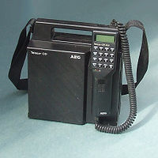

Prima generație
Telefonia mobilă modernă înregistrează un salt uriaș pe 3 aprilie 1973 când Dr. Martin Cooper de la Motorola, în timp ce se deplasa pe o stradă din New York, efectuează o convorbire cu Dr. Joel S. Engel, șeful direcției de cercetare de la AT&T Bell Labs, fiind prima convorbire cu un telefon mobil[5] Era vorba de un telefon Motorola DynaTAC.
 În afară de Martin Cooper de la Motorola căruia i se atribuie primul telefon mobil practic, bazat pe utilizarea undelor radio, putem menționa și alți inventatori care și-au adus contribuția în evoluția telefoniei mobile:
În afară de Martin Cooper de la Motorola căruia i se atribuie primul telefon mobil practic, bazat pe utilizarea undelor radio, putem menționa și alți inventatori care și-au adus contribuția în evoluția telefoniei mobile:
Nathan B. Stabbefield din Kentucky (patent 887,357);
George Sweigert din Ohio căruia i se atribuie primul telefon modern fără fir;[6]
Charles A. Gladder și Martin H. Parelman din Nevada, invenție patentată în 1979 ce prevedea utilizarea frecvențelor radio.
Dacă Bell Laboratories introdusese ideea comunicațiilor celulare pentru mașinile poliției (în 1947), meritul Motorola și mai ales al lui Cooper constă în utilizarea acestuia și în afara automobilului.[7]
În 1977, AT&T și Bell Labs construiesc un prototip de sistem celular, iar în anul următor Bell Labs lansează testarea primei rețele celulare din Chicago, având peste 2000 de clienți de probă, utilizân serviciul AMPS, dar această rețea a fost aprobată de Comisia Federală de Comunicații (FCC) abia în 1982. În octombrie 1983, Illinois Bell deschide primul sistem celular comercial.
Prima lansare comercială a telefoanelor celulare a avut loc în Tokio în 1979 (firma NET)[7] În 1981, Motorola și American Radio Telephone lansează o a doua testare de serviciu comercial pe teritoriul SUA. În același an, sistemul NMT este lansat în Danemarca, Finlanda, Norvegia și Suedia.
În 1982, după amânări îndelungate, FCC aprobă serviciul comercial celular pe teritoriul american.
În 1982, după amânări îndelungate, FCC aprobă serviciul comercial celular pe teritoriul american.
Primul telefon mobil de pe piața americană a fost Motorola DynaTAC 8000 X, care a primit aprobarea în 1983. Destul de redus ca dimensiuni pentru acea epocă, acest tip de telefon, considerat primul telefon mobil veritabil[8], a fost dezvoltat cu portul substanțial al lui M. Cooper și a necesitat costuri de cercetare de peste 100 milioane de dolari.[5][9]

În 1983, Ameritech introduce în Chicago primul serviciu analog celui furnizat de Advanced Mobile Phone Service (AMPS).
Primul telefon mobil care putea face trecerea de la o arie celulară la alta a fost comercializat de Bell Labs în 1984. Astfel, telefoanele încep să se micșoreze, iar aria lor de acoperire să se mărească.
În anii '80 are loc o dezvoltare susținută a telefoniei mobile. Apar rețele celulare cu o multitudine de stații-bază având asigurat și protocoluil aferent de trecere de la o celulă la alta, fără întreruperea convorbirii. În 1987, numărul de abonați americani depășește un milion.
În acea perioadă transmisia se efectua în sistem analog, tehnologie care nu era la fel de performantă ca cea digitală de astăzi. Apăreau interferențe legate de electricitatea statică și de zgomot, iar transmisiile erau departe de a fi perfecte. Sistemele utilizate (NMT, AMPS, TACS, RTMI, C-Net și Radiocom 2000) vor fi desemnate ulterior sub denumirea generală de generația I (1 G) de telefoane mobile.
A doua generație
Are loc o evoluție rapidă a telefoniei mobile.
Prin anii '90 este lansată a doua generație (2G), care era bazată pe sistemele GSM (Global System for Mobile Communication)[10], IS-116 ("TDMA"), IS-95 ("CDMA"), iDEN și PDC. Sistemul de telefonie 2G este pus în practică pentru prima dată în Finlanda, în 1991, prin rețeaua de tip GSM Radiolinja (astăzi Elisa), fondată la 19 septembrie 1998.
De data aceasta, transmisia se realiza în mod digital. Dispăreau interferențele, iar conectarea cu rețeaua era mai rapidă.
Telefoanele devin tot mai mici și portabile (greutatea cuprinsă între 100 și 200 grame devine standard), mai eficiente energetic, iar popularitatea lor crește, devenind tot mai ieftine. Industria telefonului mobil ia amploare. Acest lucru se datorează diverselor inovații tehnologice, atât în domeniul electronicii (miniaturizarea și creșterea eficienței componentelor), cât și al acumulatorilor. De asemenea, creșterea numărului de antene ale rețelei celulare conduce la scăderea puterii și energiei necesare unui telefon mobil.
Pe lângă reducerea dimensiunii telefoanelor, mai era necesară și armonizarea frecvențelor de lucru din spațiul european cu cele din America.
Noi servicii oferite de a doua generație de telefoane:
În Franța primul telefon mobil apare în 1992